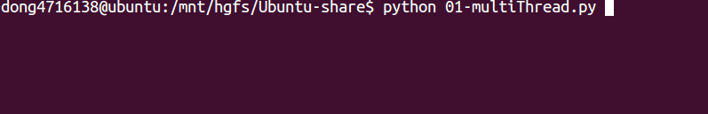

死锁
现实社会中，男女双方都在等待对方先道歉

如果双方都这样固执的等待对方先开口，弄不好，就分搜了
1. 死锁
在线程间共享多个资源的时候，如果两个线程分别占有一部分资源并且同时等待对方的资源，就会造成死锁。
尽管死锁很少发生，但一旦发生就会造成应用的停止响应。下面看一个死锁的例子
#coding=utf-8
import threading
import time
class MyThread1(threading.Thread):
def run(self):
# 对mutexA上锁
mutexA.acquire()
# mutexA上锁后，延时1秒，等待另外那个线程 把mutexB上锁
print(self.name+'----do1---up----')
time.sleep(1)
# 此时会堵塞，因为这个mutexB已经被另外的线程抢先上锁了
mutexB.acquire()
print(self.name+'----do1---down----')
mutexB.release()
# 对mutexA解锁
mutexA.release()
class MyThread2(threading.Thread):
def run(self):
# 对mutexB上锁
mutexB.acquire()
# mutexB上锁后，延时1秒，等待另外那个线程 把mutexA上锁
print(self.name+'----do2---up----')
time.sleep(1)
# 此时会堵塞，因为这个mutexA已经被另外的线程抢先上锁了
mutexA.acquire()
print(self.name+'----do2---down----')
mutexA.release()
# 对mutexB解锁
mutexB.release()
mutexA = threading.Lock()
mutexB = threading.Lock()
if __name__ == '__main__':
t1 = MyThread1()
t2 = MyThread2()
t1.start()
t2.start()
运行结果： 
此时已经进入到了死锁状态，可以使用ctrl-c退出
2. 避免死锁
- 程序设计时要尽量避免（银行家算法）
- 添加超时时间等
附录-银行家算法
[背景知识]
一个银行家如何将一定数目的资金安全地借给若干个客户，使这些客户既能借到钱完成要干的事，同时银行家又能收回全部资金而不至于破产，这就是银行家问题。这个问题同操作系统中资源分配问题十分相似：银行家就像一个操作系统，客户就像运行的进程，银行家的资金就是系统的资源。
[问题的描述]
一个银行家拥有一定数量的资金，有若干个客户要贷款。每个客户须在一开始就声明他所需贷款的总额。若该客户贷款总额不超过银行家的资金总数，银行家可以接收客户的要求。客户贷款是以每次一个资金单位（如1万RMB等）的方式进行的，客户在借满所需的全部单位款额之前可能会等待，但银行家须保证这种等待是有限的，可完成的。
例如：有三个客户C1，C2，C3，向银行家借款，该银行家的资金总额为10个资金单位，其中C1客户要借9各资金单位，C2客户要借3个资金单位，C3客户要借8个资金单位，总计20个资金单位。某一时刻的状态如图所示。
对于a图的状态，按照安全序列的要求，我们选的第一个客户应满足该客户所需的贷款小于等于银行家当前所剩余的钱款，可以看出只有C2客户能被满足：C2客户需1个资金单位，小银行家手中的2个资金单位，于是银行家把1个资金单位借给C2客户，使之完成工作并归还所借的3个资金单位的钱，进入b图。同理，银行家把4个资金单位借给C3客户，使其完成工作，在c图中，只剩一个客户C1，它需7个资金单位，这时银行家有8个资金单位，所以C1也能顺利借到钱并完成工作。最后（见图d）银行家收回全部10个资金单位，保证不赔本。那麽客户序列{C1，C2，C3}就是个安全序列，按照这个序列贷款，银行家才是安全的。否则的话，若在图b状态时，银行家把手中的4个资金单位借给了C1，则出现不安全状态：这时C1，C3均不能完成工作，而银行家手中又没有钱了，系统陷入僵持局面，银行家也不能收回投资。
综上所述，银行家算法是从当前状态出发，逐个按安全序列检查各客户谁能完成其工作，然后假定其完成工作且归还全部贷款，再进而检查下一个能完成工作的客户，......。如果所有客户都能完成工作，则找到一个安全序列，银行家才是安全的。